Version 1.0.0 · C:\Users\au662213\repos\biocal3d\data\ROI_Exploration_20261022_122749
Discovered 512 scans / 48 physical specimens; analysed 512 scans / 48 specimens. Failures: 0. LABscanner is a laboratory scanner.
| cohort | scanner | stage | analysed_scans |
|---|---|---|---|
| fresh | LABscanner | baseline | 16 |
| fresh | LABscanner | clean | 16 |
| fresh | TRIOS3 | baseline | 16 |
| fresh | TRIOS3 | clean | 16 |
| fresh | TRIOS5 | baseline | 16 |
| fresh | TRIOS5 | clean | 16 |
| fresh | iTERO | baseline | 16 |
| fresh | iTERO | clean | 16 |
| mature | LABscanner | baseline | 32 |
| mature | LABscanner | clean | 32 |
| mature | LABscanner | partial | 32 |
| mature | TRIOS3 | baseline | 32 |
| mature | TRIOS3 | clean | 32 |
| mature | TRIOS3 | partial | 32 |
| mature | TRIOS5 | baseline | 32 |
| mature | TRIOS5 | clean | 32 |
| mature | TRIOS5 | partial | 32 |
| mature | iTERO | baseline | 32 |
| mature | iTERO | clean | 32 |
| mature | iTERO | partial | 32 |
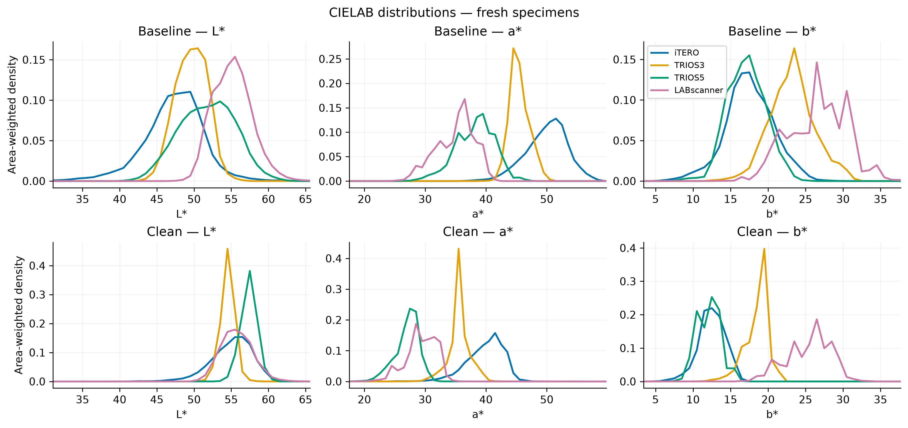
Within each scan, colour histograms are weighted by visible 3D surface area and normalised. Curves average scan histograms with one equal contribution per specimen. Assumed sRGB/D65/2°; these describe exported appearance. Background pixels are excluded.
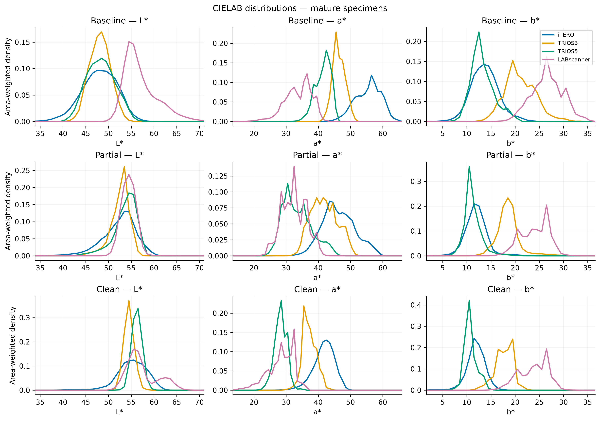
Within each scan, colour histograms are weighted by visible 3D surface area and normalised. Curves average scan histograms with one equal contribution per specimen. Assumed sRGB/D65/2°; these describe exported appearance. Background pixels are excluded.
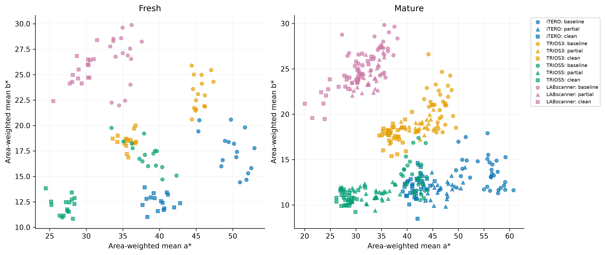
Each point is one scan's surface-area-weighted mean CIELAB colour. Colours identify scanners; symbols identify experimental stages. Separation is descriptive, not a classification result.
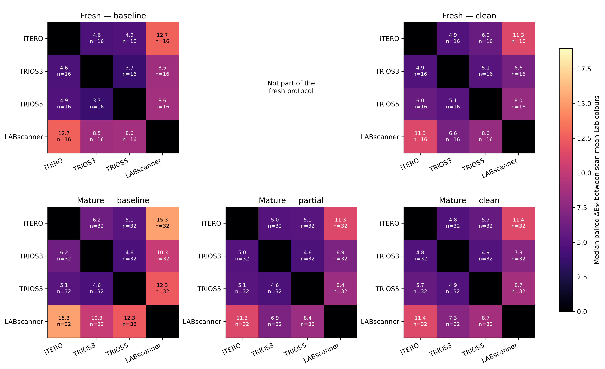
Each comparison matches the same physical specimen and experimental stage. Cells show median ΔE₀₀ between area-weighted scan mean Lab colours and the number of paired specimens. This is a centroid difference, not a pointwise ΔE map or a colour-accuracy measurement.
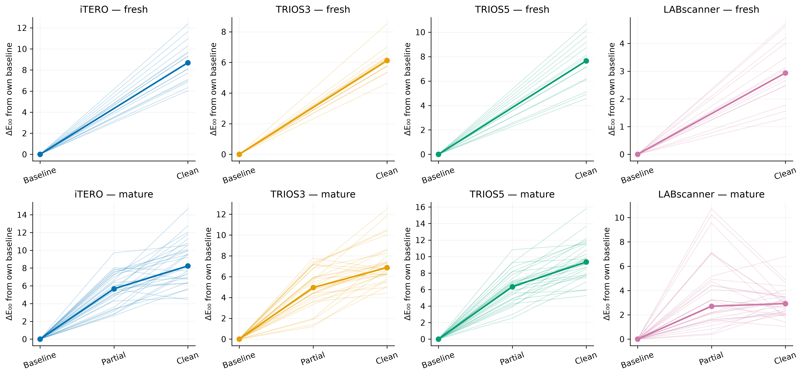
Thin lines follow individual physical specimens within each scanner; thick lines show medians. Colour change is measured relative to each specimen's own baseline scan. Fresh specimens have two stages; mature specimens have three. No plaque labels are inferred from stage names.
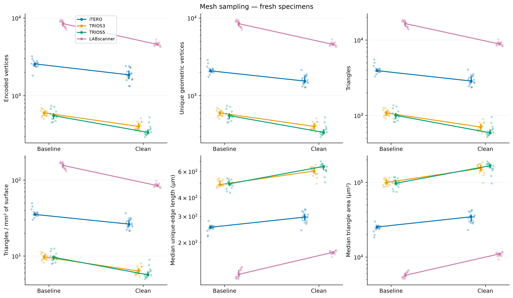
Dots represent individual scans; connected markers show scanner medians and vertical bars show the interquartile range. Vertex counts include encoded texture-seam duplicates; unique geometric vertices weld exact coordinate duplicates for counting only. Source meshes are not changed.
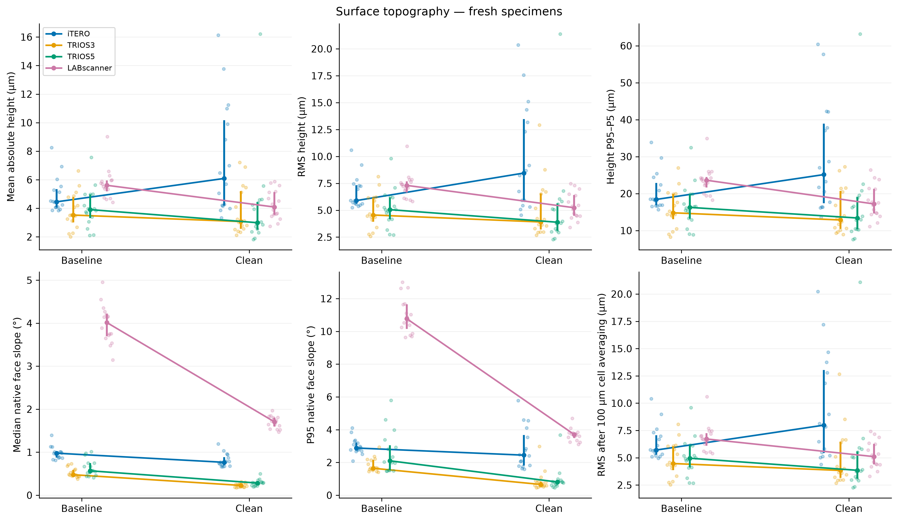
Plane-detrended topographic descriptors. Native RMS uses exact triangle-area integration; mean absolute height and height quantiles use deterministic uniform-area samples. Native slopes are area-weighted. These are scanner-derived, unfiltered descriptors, not independently validated standard roughness measurements. Dots are scans; markers/IQRs summarise specimens.
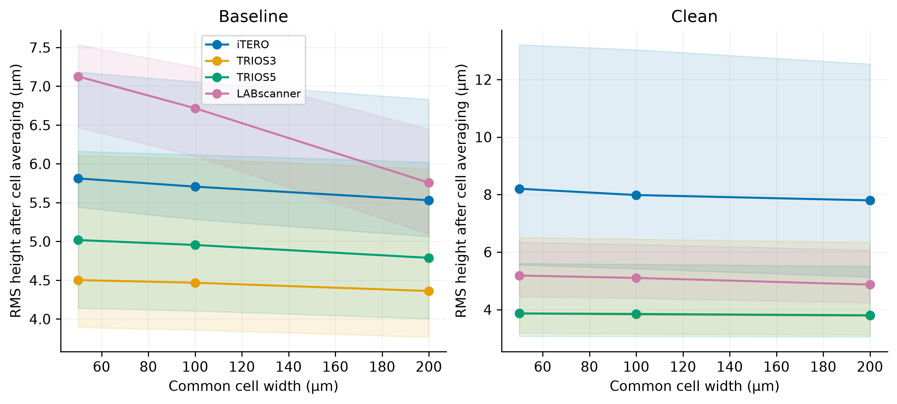
Stored height maps are surface-area-weighted box-averaged into cells of the indicated physical width, then plane-detrended again. Lines show medians and shading the specimen IQR. Cells below the coverage threshold are excluded; holes are not filled. Equal grid spacing does not establish equal scanner resolution. No Gaussian or standardised roughness-band filtering is applied.
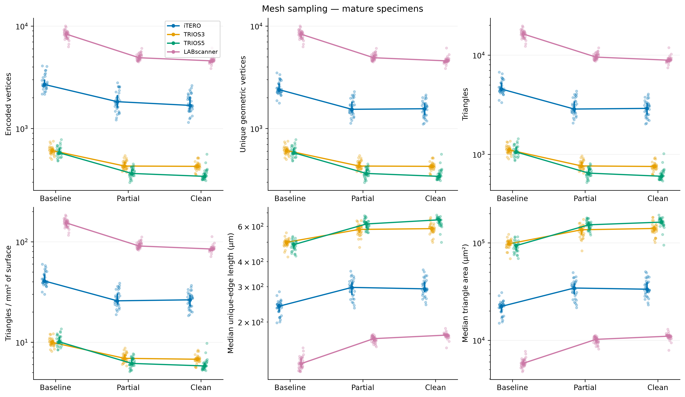
Dots represent individual scans; connected markers show scanner medians and vertical bars show the interquartile range. Vertex counts include encoded texture-seam duplicates; unique geometric vertices weld exact coordinate duplicates for counting only. Source meshes are not changed.
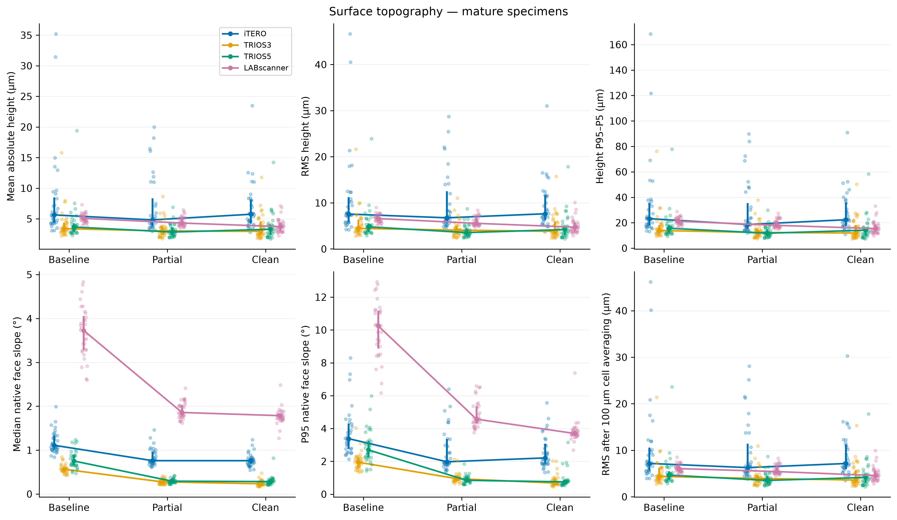
Plane-detrended topographic descriptors. Native RMS uses exact triangle-area integration; mean absolute height and height quantiles use deterministic uniform-area samples. Native slopes are area-weighted. These are scanner-derived, unfiltered descriptors, not independently validated standard roughness measurements. Dots are scans; markers/IQRs summarise specimens.
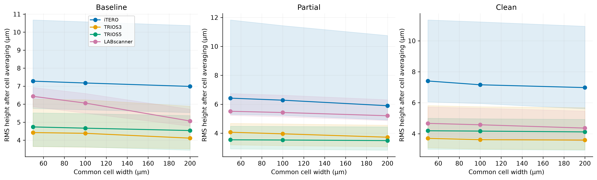
Stored height maps are surface-area-weighted box-averaged into cells of the indicated physical width, then plane-detrended again. Lines show medians and shading the specimen IQR. Cells below the coverage threshold are excluded; holes are not filled. Equal grid spacing does not establish equal scanner resolution. No Gaussian or standardised roughness-band filtering is applied.
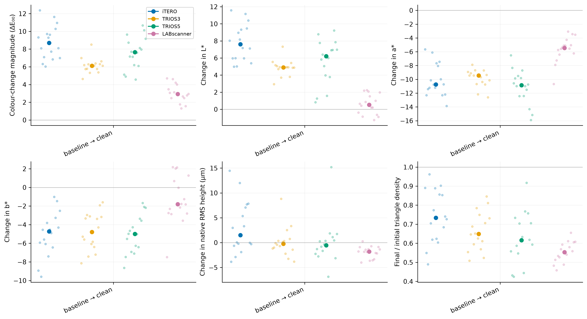
All changes are paired within a physical specimen and scanner. Curves show scanner medians and dots show individual paired changes. Signed changes are later minus earlier; density ratios are later divided by earlier. Differences indicate stage associations, without identifying plaque pixels.
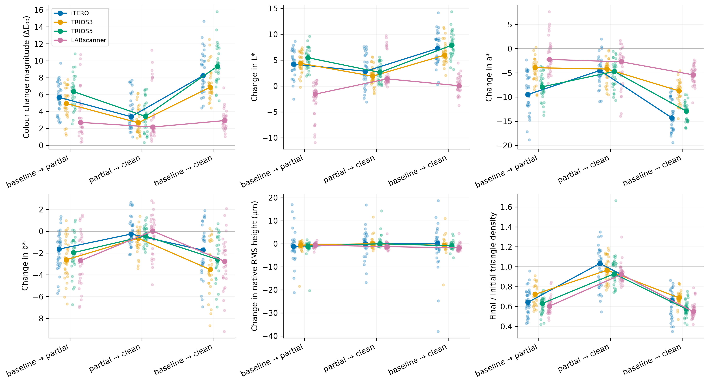
All changes are paired within a physical specimen and scanner. Curves show scanner medians and dots show individual paired changes. Signed changes are later minus earlier; density ratios are later divided by earlier. Differences indicate stage associations, without identifying plaque pixels.
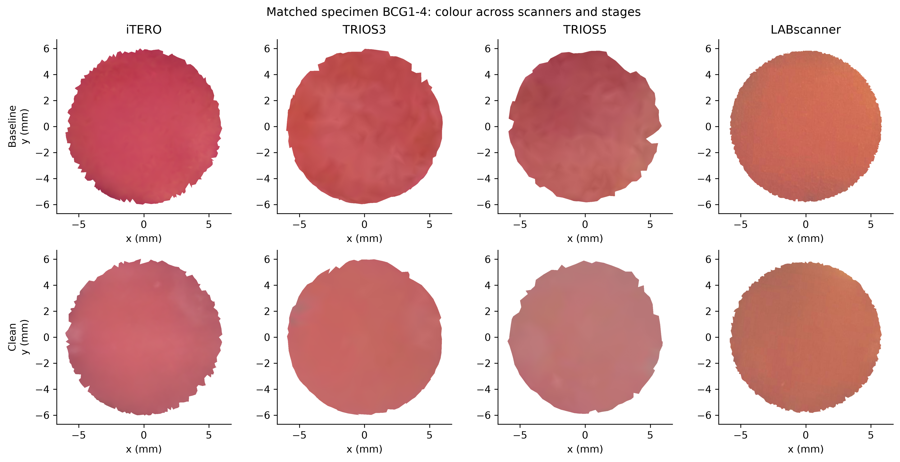
Original saved unlit RGB projections; columns are scanners and rows are experimental stages. Images share physical display limits. Scanner-specific canonical frames do not provide exact pointwise correspondence between scanners.
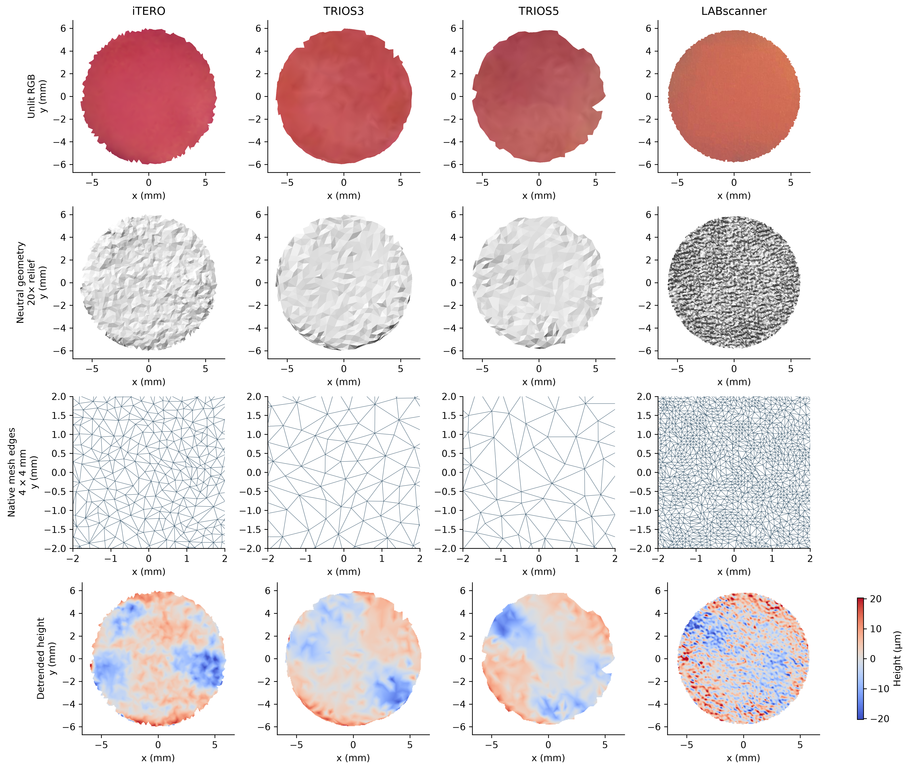
Matched scans of one specimen. Rows show saved RGB, neutral-shaded native geometry with a fixed 20× vertical exaggeration for display only, native triangle edges in a 4 mm square, and area-averaged/detrended height at 0.05 mm cells. The height colour limit is shared across all selected scans (±20.3 µm). Lighting and relief exaggeration are identical across scanners; quantitative measurements use unexaggerated geometry. These views illustrate appearance and structure without asserting plaque location.
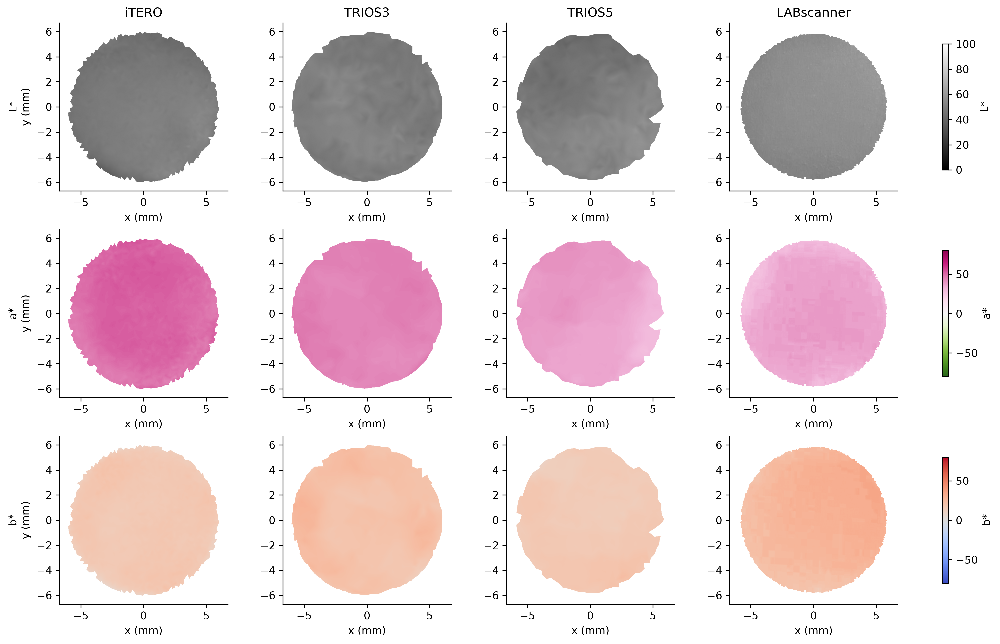
CIELAB channels derived from the saved RGB projection under assumed sRGB/D65/2°. Each channel uses identical display limits across scanners; limits for a* and b* are ±80 and may clip display extremes. All numeric summaries use the full, unclipped values.
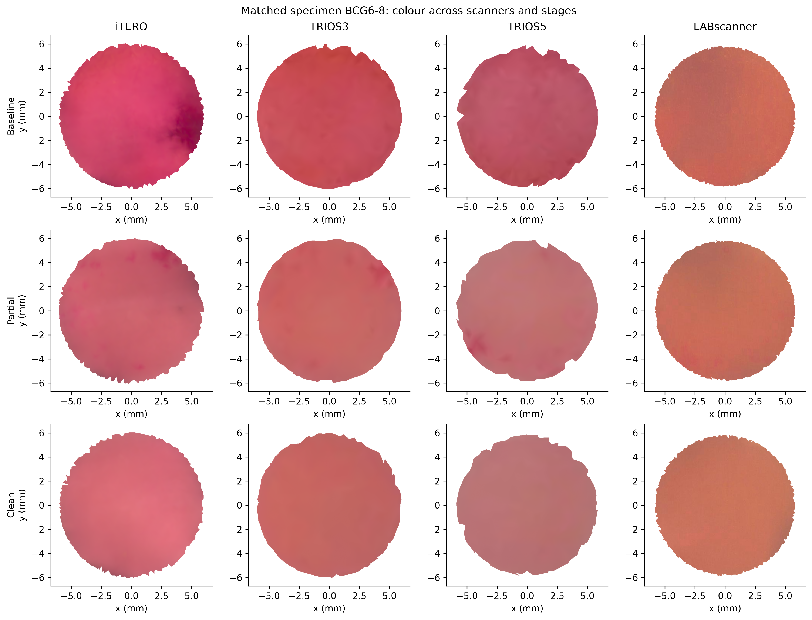
Original saved unlit RGB projections; columns are scanners and rows are experimental stages. Images share physical display limits. Scanner-specific canonical frames do not provide exact pointwise correspondence between scanners.
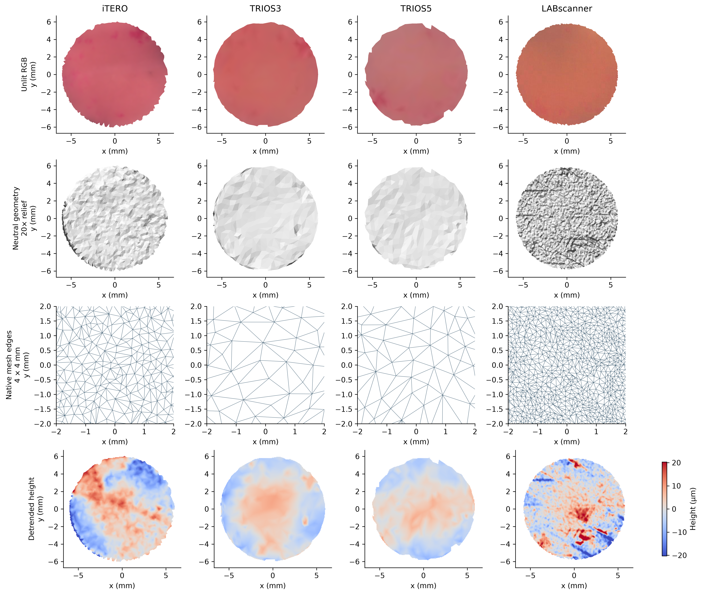
Matched scans of one specimen. Rows show saved RGB, neutral-shaded native geometry with a fixed 20× vertical exaggeration for display only, native triangle edges in a 4 mm square, and area-averaged/detrended height at 0.05 mm cells. The height colour limit is shared across all selected scans (±20.3 µm). Lighting and relief exaggeration are identical across scanners; quantitative measurements use unexaggerated geometry. These views illustrate appearance and structure without asserting plaque location.
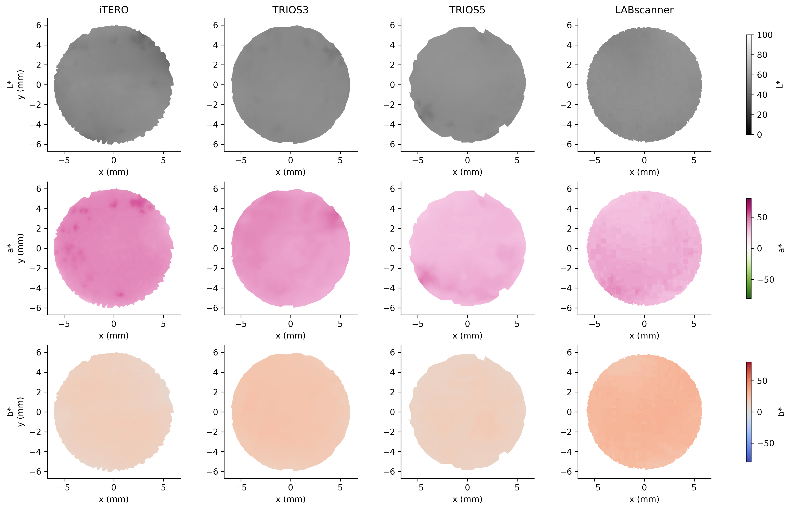
CIELAB channels derived from the saved RGB projection under assumed sRGB/D65/2°. Each channel uses identical display limits across scanners; limits for a* and b* are ±80 and may clip display extremes. All numeric summaries use the full, unclipped values.
No processing failures.
Runtime: 298.8 seconds. See run_config.json for settings, assumptions and software versions.